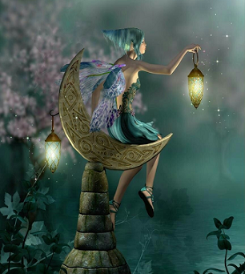
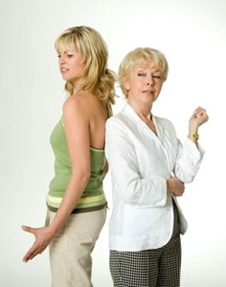

Творческое объединение
"Открытый университет"
Тренеры
Кашко Ольга Николаевна
- Ф.И.О. специалиста: Кашко Ольга Николаевна
- Дата рождения: 15 ноября 1984 г.р.
- Место рождения: Гродненская обл., Щучинский р-н, д.
Шинковцы
- Гражданство РБ
- Национальность белоруска
- Религиозная принадлежность православное христианство
- Актуальное место жительства:
индекс
230021
населенный пункт
г. Гродно
улица
Тавлая
№ дома, № квартиры
д. 48 кв. 72
- Регистрация (согласно паспорту):
индекс
230021
населенный пункт
г. Гродно
улица
Тавлая
№ дома, № квартиры
д. 48 кв. 72
- Паспортные данные:
Серия КН номер 1875547
Выдан (полная дата выдачи) 07.12.2009
Выдан (полное название РОВД) Ленинским РОВД г. Гродно
Индивидуальный номер паспорта 4151184К018РВ5
- Контактные линии:
Мобильный телефон: +375 (29) 582 12 08
Домашний телефон: 80152 70 66 41
Рабочий телефон: -
E-mail: o.n.kashko@yandex.by
Skype: olyakashko
- Сфера деятельности специалиста:
- образование (дополнительное образование, раннее развитие,
специальное,
дошкольное, школьное, профессионально-техническое, среднее специальное,
высшее).
Государственное учреждение образования «Дошкольный центр развития
ребёнка №30 г.
Гродно»
- Сведения об образовании специалиста:
- Общее среднее образование
Учреждение образования «Дембровская средняя школа», 2002 год
- Среднее специальное образование:
Учреждение образования «Слонимское государственное медицинское
училище»
Специальность
сестринское дело
Квалификация
медицинская сестра
Форма обучения
дневная
Период обучения
2002-2004 гг.
- Высшее образование:
Учреждение образования «Барановичский государственный
университет»
Факультет
педагогический
Специальность
практическая психология
Квалификация
педагог-психолог
Форма обучения
заочная
Период обучения
2007-2012 гг.
Опыт работы специалиста в помогающей
деятельности:
Период трудоустройства
Место работы
Должность
Компетенции (сфера деятельности)
Декабрь 2014г.
Государственное учреждение образования «Дошкольный центр развития ребёнка
№30 г.
Гродно»
Педагог-психолог
- Психологическая диагностика
- Психолого-педагогическое консультирование
- Психологическая подготовка к школе
- Профилактическая и просветительская деятельность
- Коррекционная и развивающая деятельность
ДОПОЛНИТЕЛЬНОЕ ОБРАЗОВАНИЕ СОИСКАТЕЛЯ
Программы дополнительного профессионально развития (курсы
повышения
квалификации и
переподготовки кадров). Программы личностного развития (тренинги, семинары,
курсы
личностного роста):
Название сертификационной программы
Количество часов по обучающей программе
Ведущий сертификационной программы
Время и место выдачи сертификата
Учебная программа повышения квалификации педагогов-психологов учреждений
дошкольного образования «Современные подходы к содержанию и формам работы
специалистов образования»
40
Государственное учреждение образования «Академия последипломного
образования» г. Минск
10 апреля 2015 г.
г. Минск
ГУО «АПО»
Учебная программа повышения квалификации педагогов-психологов учреждений
дошкольного, общего среднего, специального образования, учреждений
дополнительного образования «Психолого-педагогическая поддержка одарённых
детей»
72
Государственное учреждение образования «Академия последипломного
образования» г. Минск
27 ноября 2015 г.
г. Минск
ГУО «АПО»
Обучающий курс «Метод «Sand Art» - психологические ресурсы рисования песком
в работе с дошкольниками и младшими школьниками»
10
Государственное учреждение образования «Гродненский областной институт
развития образования»
21 декабря 2015 г.
г. Гродно
ГУО «ГОИРО»
Базовый семинар-практикум по использованию метафорических ассоциативных карт
в различных подходах к консультированию, обучению и психотерапии «Основы
использования метафорических ассоциативных карт в помогающей деятельности»
20
Александр Горобченко
8-9 октября 2016 г.
г. Гродно
Творческая мастерская «OH-STUDIO»
Семинар-практикум по использованию метафорических ассоциативных карт в
различных подходах к консультированию, обучению и психотерапии
«Метафорические ассоциативные карты в работе со стрессами и
стрессоустойчивостью»
20
Александр Горобченко
12-13ноября 2016 г.
г. Гродно
Творческая мастерская «OH-STUDIO»
Интервизия и супервизия МАК
80
Александр Горобченко
2016-2017, Гродно
Семинар-тренинг по образовательной программе: «Системная семейная терапия»:
Семья как система, основы системной семейной терапии
16
А.А. Аладьин
26-27 ноября 2016г.
г. Гродно
ИП Н.В. Дроздова
Образовательный семинар «Мама, папа и я»
16
Ш.А. Амонашвили
П.Ш. Амонашвили
18-19 марта 2017 г. г. Гродно
«Международная ассоциация общественных объединений» «Международный центр
гуманной педагогики»
Семинар по образовательной программе: «Системная семейная терапия»:
психотерапия сексуальных дисфункций в контексте семейной терапии
16
Н.В. Уминская
25-26 марта 2017 г. г. Гродно
ИП Н.В. Уминская
Мастер-класс «Карьера и личность: технологии самопрезентации специалиста,
технологии продаж, имидж коммуникатора в организационной психологии»
3
Дмитрий Рожко
27 марта 2015 г.
г. Гродно
ГОООПП
IV фестиваль практической психологии
Мастер-класс «Арт-терапия кризисных состояний: метод мандал в системе
психологической коррекции эмоционального состояния личности»
3
Н.В. Тальвинская
25 марта 2016 г.
г. Гродно
ГОООПП
V фестиваль практической психологии
Мастер-класс «Кратковременная психокоррекционная работа с детьми,
переживающими утрату и горе»
3
О.А. Терёхина
25 марта 2016 г.
г. Гродно
ГОООПП
V фестиваль практической психологии
Семинар «Архетипы системного мышления»
20
Владимир Борисов
Юрий Фомченко
Июнь 2016 г.
г. Гродно
Тренинговый центр «Сталкер»
Семинар-практикум «Применение метафоры в работе практического психолога»
3
Н.В. Тальвинская
15 июля 2016 г.
г. Гродно
ГОООПП
Мастер-классы психологов и психотерапевтов
9
Юрий Фомченко
Ольга Венско,
Наталья Уминская,
Ольга Терехина
24-25 марта 2017 г.
г. Гродно
ГОООПП
6 фестиваль практической психологии
| индекс | 230021 |
| населенный пункт | г. Гродно |
| улица | Тавлая |
| № дома, № квартиры | д. 48 кв. 72 |
| индекс | 230021 |
| населенный пункт | г. Гродно |
| улица | Тавлая |
| № дома, № квартиры | д. 48 кв. 72 |
Серия КН номер 1875547
Выдан (полная дата выдачи) 07.12.2009
Выдан (полное название РОВД) Ленинским РОВД г. Гродно
Индивидуальный номер паспорта 4151184К018РВ5
Мобильный телефон: +375 (29) 582 12 08
Домашний телефон: 80152 70 66 41
Рабочий телефон: -
E-mail: o.n.kashko@yandex.by
Skype: olyakashko
- образование (дополнительное образование, раннее развитие,
специальное,
дошкольное, школьное, профессионально-техническое, среднее специальное,
высшее).
Государственное учреждение образования «Дошкольный центр развития ребёнка №30 г. Гродно»
- Общее среднее образование
Учреждение образования «Дембровская средняя школа», 2002 год - Среднее специальное образование:
Учреждение образования «Слонимское государственное медицинское училище»Специальность сестринское дело Квалификация медицинская сестра Форма обучения дневная Период обучения 2002-2004 гг. - Высшее образование:
Учреждение образования «Барановичский государственный университет»Факультет педагогический Специальность практическая психология Квалификация педагог-психолог Форма обучения заочная Период обучения 2007-2012 гг.
Опыт работы специалиста в помогающей деятельности:
| Период трудоустройства | Место работы | Должность | Компетенции (сфера деятельности) |
| Декабрь 2014г. | Государственное учреждение образования «Дошкольный центр развития ребёнка №30 г. Гродно» | Педагог-психолог |
|
ДОПОЛНИТЕЛЬНОЕ ОБРАЗОВАНИЕ СОИСКАТЕЛЯ
Программы дополнительного профессионально развития (курсы повышения квалификации и переподготовки кадров). Программы личностного развития (тренинги, семинары, курсы личностного роста):
| Название сертификационной программы | Количество часов по обучающей программе | Ведущий сертификационной программы | Время и место выдачи сертификата |
| Учебная программа повышения квалификации педагогов-психологов учреждений дошкольного образования «Современные подходы к содержанию и формам работы специалистов образования» | 40 | Государственное учреждение образования «Академия последипломного образования» г. Минск | 10 апреля 2015 г. г. Минск ГУО «АПО» |
| Учебная программа повышения квалификации педагогов-психологов учреждений дошкольного, общего среднего, специального образования, учреждений дополнительного образования «Психолого-педагогическая поддержка одарённых детей» | 72 | Государственное учреждение образования «Академия последипломного образования» г. Минск | 27 ноября 2015 г. г. Минск ГУО «АПО» |
| Обучающий курс «Метод «Sand Art» - психологические ресурсы рисования песком в работе с дошкольниками и младшими школьниками» | 10 | Государственное учреждение образования «Гродненский областной институт развития образования» | 21 декабря 2015 г. г. Гродно ГУО «ГОИРО» |
| Базовый семинар-практикум по использованию метафорических ассоциативных карт в различных подходах к консультированию, обучению и психотерапии «Основы использования метафорических ассоциативных карт в помогающей деятельности» | 20 | Александр Горобченко | 8-9 октября 2016 г. г. Гродно Творческая мастерская «OH-STUDIO» |
| Семинар-практикум по использованию метафорических ассоциативных карт в различных подходах к консультированию, обучению и психотерапии «Метафорические ассоциативные карты в работе со стрессами и стрессоустойчивостью» | 20 | Александр Горобченко | 12-13ноября 2016 г. г. Гродно Творческая мастерская «OH-STUDIO» |
| Интервизия и супервизия МАК | 80 | Александр Горобченко | 2016-2017, Гродно |
| Семинар-тренинг по образовательной программе: «Системная семейная терапия»: Семья как система, основы системной семейной терапии | 16 | А.А. Аладьин | 26-27 ноября 2016г. г. Гродно ИП Н.В. Дроздова |
| Образовательный семинар «Мама, папа и я» | 16 | Ш.А. Амонашвили П.Ш. Амонашвили | 18-19 марта 2017 г. г. Гродно «Международная ассоциация общественных объединений» «Международный центр гуманной педагогики» |
| Семинар по образовательной программе: «Системная семейная терапия»: психотерапия сексуальных дисфункций в контексте семейной терапии | 16 | Н.В. Уминская | 25-26 марта 2017 г. г. Гродно ИП Н.В. Уминская |
| Мастер-класс «Карьера и личность: технологии самопрезентации специалиста, технологии продаж, имидж коммуникатора в организационной психологии» | 3 | Дмитрий Рожко | 27 марта 2015 г. г. Гродно ГОООПП IV фестиваль практической психологии |
| Мастер-класс «Арт-терапия кризисных состояний: метод мандал в системе психологической коррекции эмоционального состояния личности» | 3 | Н.В. Тальвинская | 25 марта 2016 г. г. Гродно ГОООПП V фестиваль практической психологии |
| Мастер-класс «Кратковременная психокоррекционная работа с детьми, переживающими утрату и горе» | 3 | О.А. Терёхина | 25 марта 2016 г. г. Гродно ГОООПП V фестиваль практической психологии |
| Семинар «Архетипы системного мышления» | 20 | Владимир Борисов Юрий Фомченко | Июнь 2016 г. г. Гродно Тренинговый центр «Сталкер» |
| Семинар-практикум «Применение метафоры в работе практического психолога» | 3 | Н.В. Тальвинская | 15 июля 2016 г. г. Гродно ГОООПП |
| Мастер-классы психологов и психотерапевтов | 9 | Юрий Фомченко Ольга Венско, Наталья Уминская, Ольга Терехина | 24-25 марта 2017 г. г. Гродно ГОООПП 6 фестиваль практической психологии |


Креативность – это способность человека к нестандартному (творческому) мышлению и поведению.
Креативность необходима в любой сфере деятельности. Тренинг поможет осознать креативность в себе и развить её, находить новые нестандартные решения поставленных задач, формировать навыки и умения управления творческим процессом.
Продолжительность: 2 часа.
Количество участников: 16-20.
Стоимость: 5 рублей.
Венисяцкая Светлана Васильевна
Венисяцкая Светлана Васильевна, Действительный член Гродненского областного общественного объединения практических психологов (ГОООПП, 2016 - по н.вр.), консультант и ведущая ворк-шопов Творческого объединения мастеров метафорической психотерапии «Карточный Домик», ведущая школы-студии личностного развития «Палитра Жизни», сертифицированный специалист по работе с метафорическими ассоциативными картами, сертифицированный специалист по системной семейной психотерапии и сексологии, сертифицированный специалист по работе с детьми и подростками с помощью кинетического песка.
Специализации в области психологической практики:
2017-2018- Базовый курс по арт-терапии (Гродно).
2017-2018 – Метафорическая психотерапия: метафора и метафорические ассоциативные карты в консультировании, просвещении, тренинге, коучинге, психотерапии (Гродно).
2017 - Работа с детьми и подростками с помощью кинетического песка (Гродно).
2016-2017 – Системная семейная психотерапия. Сексология и сексотерапия (Гродно-Минск).
2016-2017 – Метафорические ассоциативные карты в деятельности специалистов помогающих профессий (Гродно-Минск).
2016-2017 – Технологии НЛП в краткосрочной терапии (Гродно-Витебск).
2016-2017 – Самореализация по-женски (Гродно-Витебск).
2016-2017 – Работа с целями, ценностями и убеждениями в консультировании и психотерапии. Целевой коучинг (Гродно-Витебск).
2016-2017 – Технологии личностного роста в работе с женским населением (Гродно).
2016-2017 – Ораторское и актёрское мастерство, сценическая речь и драматургия (Гродно).
2015-2016 – Социально-психологическая адаптация детей к детскому саду, сертифицированный специалист
Опыт работы и награды:
Получила благодарность от Гродненского областного исполнительного комитета за активное участие в реализации государственной молодежной политики, развитие движения клубов ЮНЕСКО в Гродно.
Деятельность в Инновационном центре Санкт-Петербурга по организации детского оздоровления и досуга.

«Зазеркалье собственной души….»
И лёд тает, когда мы светим, и сердца открываются,
когда мы любим, и люди меняются, когда мы открыты,
и чудеса происходят, когда мы верим.
Программа по работе с метафорическими ассоциативными
картами,
с проективными методиками, элементами арт-терапии.
Мы притягиваем к себе то, что есть внутри нас: каждое обстоятельство, каждый человек и каждая ситуация притянуты нами. Можно ли придумать систему более великолепную и надежную?
Ваша жизнь – отражение внутреннего мира. А он всегда находиться полностью под Вашим контролем.
Поэтому, давайте вместе совершим путешествие в «Зазеркалье собственной души» и разберемся, что же происходит у нас внутри…..
Название мастерской: «Зазеркалье собственной души….».
Ведущая мастерской: Венисяцкая Светлана Васильевна, Действительный член Гродненского областного общественного объединения практических психологов (ГОООПП), консультант Творческого объединения мастеров метафорической психотерапии «Карточный Домик», консультант детско-родительской секции студии развития «Палитра Жизни», сертифицированный специалист по работе с метафорическими ассоциативными картами, сертифицированный специалист по системной семейной психотерапии и сексологии.
Направление работы, формы и методы работы на мастерской: проективные методы исследования и коррекции самоидентичности, арт-терапия, метафорическая психотерапия.
Общая продолжительность мастерской: 2 часа.
Целевая аудитория: девушки и женщины старше 18 лет.
Общая численность группы: до 16 человек.
Цель мастерской: интеграция психоэмоциональных и когнитивных элементов женской самоидентичности.
Краткая аннотация мастерской: Светлана Венисяцкая приглашает участниц Летнего интенсива в увлекательное и интригующее «Зазеркалье собственной души….». Всех желающих поисследовать феномен женской самоидентичности ждут открытия с помощью метафорических карт, проективных методик, а также арт-терапии. Мастерская дарит возможность каждой девушке, женщине заглянуть внутрь себя, встретиться с установками, стереотипами, препятствиями и остановками на пути становления Женщины. Нас ждет встреча с собственными чувствами, мечтами и надеждами. Все ответы уже давно заложены в нас самих.
ДИЗАЙН ТВОРЧЕСКОЙ МАСТЕРСКОЙ
1. Знакомство
Упражнение «Сказка»
Это упражнение для группы. Первый участник вытягивает карту и рассказывает историю, далее по кругу все члены группы придумывают продолжение. В итоге получается история, в которой каждый участник размещает свои проекции. С помощью данного упражнения настраиваем группу на работу.
Упражнение «Рисуем все вместе»
Берем несколько ватманов, с помощью скотча и ножниц делаем из них одно большое полотно. Затем каждый из участников берет кисточку и с помощью красок, рисует элемент из той истории, которую только что сочинила группа. Так при помощи каждого участника, получается одна большая картина.
После того, как все нарисовали, даем обратную связь. Что чувствовали, когда рисовали? Какое ощущение есть сейчас, когда картина уже готова?
2. Погружение в собственный мир «зазеркалья»
Упражнение «Дорога к себе»
Участникам предлагается вытянуть 2 карты из колоды. Первая – то, что вам в себе не нравится с позиции вашего представления о женщине, то, что вам мешает. Вторая – то, что вам нравится и помогает. Обсуждаем. Если участников большое количество, делим их на несколько групп.
После обсуждения предлагаем вытянуть каждому по карте, которая покажет то, что вы никогда не пробовали делать, то, что вы в себе не замечали.
После обсуждения, каждому из участников, даем возможность вытянуть себе аффирмацию, которая будет помогать ему на протяжении нужного времени настроиться на повышение самооценки, любви к себе, самодостаточности.
Упражнение «Письмо»
Используя, полученную аффирмацию, а также полученную информацию по картам, предлагаем участникам написать письмо себе, в будущее, которое будет нести позитивный характер. Данное письмо рекомендуем открыть к той, дате, которую каждый сам для себя определит.
Делимся впечатлениями, какие эмоции испытывали. Какое ощущение в теле?
3. Подведение итогов.
Просим участников по кругу дать обратную связь о том, что было нового для себя, какие выводы были сделаны, как полученная информация будет им использоваться дальше.
4. Групповой шерринг: обратная связь тренера и группы.
КАРАЦАЙ РИММА ИВАНОВНА


Игра направлена на сплочение команды, демонстрацию того, как важно уметь находить в людях их лучшие качества, уметь разбираться в человеческой психологии.
Когда сотрудника назначают руководителем, предполагается, что вместе с должностью и полномочиями он обретает новый взгляд на вещи и соответствующие навыки. В жизни такой сотрудник может еще долго оставаться подчиненным. Для того, чтобы стать руководителем де-факто надо пережить в своей голове настоящую революцию, в оценке некоторых событий или решений нужно развернуть свою "картину мира" на 180 градусов. Если вы хотите, чтобы ваши руководители были в вашей команде, защищали интересы Компании – позаботьтесь о том, чтобы эта революция произошла в их сознании. Практический семинар "Адаптация сотрудника в роли руководителя" поможет в этом!
ЦЕЛЕВАЯ АУДИТОРИЯ:
сотрудники из кадрового резерва на руководящие должности, руководители через 1-3 месяца после назначения.
ЦЕЛЬ Тренинга:
- формирование правильных установок (переход от позиции исполнителя к позиции руководителя),
- изменение ролевых отношений (от коллеги к руководителю),
- формирование базовых навыков управления.
СОДЕРЖАНИЕ ПРОГРАММЫ:
Базовые компетенции руководителя
Модели отношений с подчиненными
Модели отношений с вышестоящими руководителями
Типичные ошибки молодого руководителя
Базовые инструменты руководителя
- Типы подчиненных
- Какой стиль управления выбрать?
- Как правильно ставить задачи?
- Как оценивать и контролировать?
- Как мотивировать без денег?
- Как принимать непопулярные решения?
- Наказывать или прощать?
- Что можно, а что нельзя делегировать?
- Практикум
Разрешение конфликтных ситуаций
- Что такое конфликт?
- Кто перед вами – противник или союзник?
- Типы конфликтных личностей
- Стратегии разрешения конфликтов
- Типичные ошибки в конфликтной ситуации
- Как противостоять манипуляциям?
- Практикум
Зона личностного роста
Я раскрашу целый свет
В самый свой любимый цвет
Тренинг по арт-терапии:
Рисуем сами! Рисуем вместе с ребенком! Рисуем всей семьей!
Тренинг «Психология восприятия цвета»
Почему красный цвет означает «стоп», а зеленый – «идите»?
Невеста – в белом, а черный – цвет траура и печали?
Счастливый все видит «в розовом цвете», а романтик упивается «голубыми мечтами»… «Зеленые стены умиротворяют», «сахар лучше всего продается в упаковках белого цвета».
Что кроется за этими фразами и действительно ли мы можем обратить свойства цвета себе на пользу?
Мы наделяем цвета особыми эпитетами и свойствами, например: красный-прекрасный или благородно-синий. Цвета неразрывно связаны с нашими эмоциями, и мы часто говорим: «побагровел от гнева», «почернел от зависти», «позеленел от злости».
1. Упражнения по развитию эмоциональной компетентности;
2. Упражнение на развитие «шестого чувства».

Тренинг «Дочки-матери»
«Ты меня не понимаешь!», – как часто дети и их родители слышат эту фразу друг от друга. А ведь совсем недавно эта девочка с милыми веснушками и тоненькими косичками говорила: «Мама, ты самая лучшая!». Так что же случилось? Почему в течение нашей жизни меняются наши взаимоотношения с матерями? Причем не всегда в лучшую сторону. И ведь действительно, сами того не замечая, взрослея, мы превращаемся в своих матерей. И делаем те же самые ошибки по отношению к нашим дочерям, которые делали они по отношению к нам. Как уберечь себя от проблем во взаимоотношениях «Мать и Дочь», и выйти на путь двух женщин, доверяющих друг другу?
Для своей матери мы всегда остаемся самыми лучшими и самыми красивыми, но почему же тогда не раз в свой адрес слышали обидные слова?
«Бизнес на шпильках»
Образ и стиль деловой женщины
Из чего состоит Ваш образ? Прическа, макияж, одежда, обувь... Этот список можно продолжать до бесконечности. Имидж способен рассказать о наших лучших качествах.
Ситуация с переполненными шкафами при отсутствии вещей, которые можно носить, знакома многим представительницам прекрасного пола. Как показывает практика, женщины носят 20 – 40% вещей, висящих в шкафу. Да, мы такие – импульсивные, противоречивые и непредсказуемые! За это нас и любят прагматичные мужчины. Не понимают, но любят!
Итак, что нам на самом деле следует иметь в гардеробе? Как создать свой уникальный неповторимый образ?
«Провести время!? Ишь, чего захотела! Время не проведешь! – говорил Шляпа из «Алисы в стране чудес». Ты бы лучше постаралась с ним подружиться».
«Время – деньги» - известная истина. Но 21-й век давно уже поставил эту истину под сомнение. Время порой намного дороже и важнее денег. Его, в отличие от денег, нельзя накопить, это невосполнимый ресурс. Можно ли эффективно управлять этим ресурсом?
Многие из вас скажут, и по-своему будут правы: «Время сейчас такое сумасшедшее. Надо торопиться все успеть! Сделать карьеру, устроить личную жизнь, построить жилье, воспитать детей. Тормозить некогда - посмотри, как летит жизнь. Все успеть невозможно, одни дела наползают на другие. А стоит расслабиться — все рушится… Сколько ни планируй, в твои планы все время что-то вмешивается, нужно бросать одно, делать другое, удерживать в уме третье!»
Можно решить проблему с помощью тайм-менеджмента, все можно успевать, если грамотно спланировать.
Дорогие друзья! Приглашаем Вас на тренинг по эффективной самоорганизации, цель которого - научиться быть единственным автором всех событий в жизни. Тренинг посвящен тайм-менеджменту, на котором Вы научитесь оценивать время, как стратегический ресурс, эффективность которого во многом зависит от умения пользоваться им.
У Вас появится возможность попрактиковаться в применении закона Эйзенхауэра и методе планирования Альпы. Научитесь планировать и расставлять приоритеты по степени срочности и важности, такое распределение помогает добиваться наиболее эффективного соотношения "временные затраты – полученные результаты" всем, кто живет и работает в режиме жесткого цейтнота. Изучите принцип Парето, который гласит: «20% дел дают 80% результатов, а 80% дел дают 20% результатов», доказывающий, что меньшая часть затраченных, но запланированных усилий ведет к основной части результатов (пример тому, грамотные совещания — минимум времени, максимум результат). А самое важное – научитесь «творчески лениться» и выявлять основные поглотители времени в течение рабочего дня, а так же делегировать задачи подчиненным.
Знаем ли мы себя и что мы знаем о своих близких?
Всегда ли мы понимаем их, а они нас?
Как научиться понимать себя и других людей?
Бытует мнение, что мужчины и женщины – это существа с разных планет. Как нам понять друг друга, найти того единственного и на всю жизнь? Тема взаимоотношений, особенно с противоположным полом, актуальна для каждого человека. Поиск любимого (любимой), влюбленность, эйфория окрыляют, потом происходит приземление, притирание личностей, человек начинает задавать себе новые вопросы: «Как, встретив своего близкого человека, не потерять его, выдвигая свои требования или подчиняясь его потребностям?», «Как, будучи вместе, оставаться свободным и не ущемлять себя?», «Как сделать так, чтобы отношения развивались, чтобы в них было больше радости и новизны?». Ответы найти непросто, даже если быть честным самим с собой.
У вас есть уникальная возможность прояснить – какой партнёр вам нужен и как вы его выбираете, научиться создавать долгосрочные, гармоничные отношения и завершать старые, отжившие связи.
Весь мир — театр.
В нем женщины, мужчины — все актеры.
У них свои есть выходы, уходы,
И каждый не одну играет роль.
В.Шекспир
Монолог Жака из комедии "Как вам это понравится"
Правду говорил Шекспир о том, что "вся жизнь театр, а люди в нём актёры". Но, не лучше ли.... не играть (чтобы не заиграться), а быть искренним и просто жить, оставаясь самим собой? Каковы Ваши жизненные сценарии, чьи они, каковы Ваши роли и можно ли самому быть автором своей жизни?
Премьера! Занавес! Сегодня на сцене - Ваша жизнь… Приглашаем Вас принять участие в психологическом тренинге: «Моя жизнь – театр?»
Тренинг «Мужчина и женщина… или не в деньгах
счастье».
Вы сможете познакомиться с мужскими и женскими стратегиями зарабатывания денег и прояснить, какие из них будут продуктивными именно для Вас.
Единственная настоящая роскошь –
это роскошь человеческого общения
Антуан де Сент-Экзюпери
Общение как искусство
Как часто мы говорим: "Я не могу найти с ним общий язык", "Они никогда не могут договориться", "Он меня не понимает!" или "Она никогда не слушает то, что я говорю!", "С этим человеком совершенно невозможно общаться!". Эти слова, произносимые в раздражении и отчаянии, относятся к родителям, детям, коллегам по работе и нашим любимым людям.
Все основные проблемы человека, будь то в бизнесе, семейных, личных отношениях, и, что очень важно, в отношениях с самим собой, связаны с общением. Найти общий язык - это жизненно важная потребность. Между тем, основам теории коммуникации не учат в школах или университетах, их не передают нам родители, знакомые и друзья. Почти каждый из нас - всего лишь начинающий, а не профессионал в искусстве коммуникации. Искусство общения - важнейший навык, которому стоит обучиться каждому из нас, независимо от того, где мы работаем и чем занимаемся.
Мы организуем цикл тренингов, посвященых теории и практике искусства общения. В программе будут использованы ролевые игры, показательные эксперименты, анализ конкретных ситуаций, вы освоите множество уникальных упражнений, навык выполнения которых сильно облегчит вашу жизнь в любой ситуации, связанной с общением.
Тренинг коммуникативной компетентности
Цель программы: повышение эффективности взаимодействия с партнерами по общению.
Задачи:
- 1. Освоение концепции коммуникативной компетентности в партнерском взаимодействии.
- 2. Отработка навыков активного слушания:
- формулирования правильных вопросов;
- «малого» разговора;
- уточнения и побуждения к развертыванию ответа;
- цитирования;
- перефразирования;
- интерпретации.
- 3. Отработка навыков вступления в контакт с использованием располагающих к контакту сигналов:
- вербальных;
- невербальных;
- паралингвистических.
- 4. Отработка техник снижения эмоционального напряжения:
- подчеркивание общности;
- подчеркивание значимости;
- вербализация эмоциональных состояний.
- формулирования правильных вопросов;
- «малого» разговора;
- уточнения и побуждения к развертыванию ответа;
- цитирования;
- перефразирования;
- интерпретации.
- вербальных;
- невербальных;
- паралингвистических.
- подчеркивание общности;
- подчеркивание значимости;
- вербализация эмоциональных состояний.
План тренингов
| № | Тема тренинга | Дата проведения | Место проведения |
| 1 | Фазы деловой беседы. Знакомство с техниками общения. Техника формулирования открытых вопросов. | ||
| 2 | Техники «малого» разговора | ||
| 3 | Техники вербализации – повторение, перефразирования, интерпретация. | ||
| 4 | Искусство неконфликтного общения. Регуляция эмоционального напряжения в процессе разговора. | ||
| 5 | Неречевые (невербальные) техники общения | ||
| 6 | Деловой этикет. |
Ведущий программы: Карацай Римма Ивановна 8867393.
Программа тренинга структурирована по принципу соответствия основным методам познания: анализу и синтезу информации с учетом групповой динамики и построена на самопознании, самосознании, саморазвитии личности.
Цель: помочь участникам лучше узнать себя, свои сильные стороны, развить чувство собственного достоинства, преодолеть неуверенность, страх. Наиболее успешно и полно реализовать себя в поведении и профессиональной деятельности, утвердить свои права и собственную ценность.
Программа включает 3 этапа:
I этап – ориентировочный. «Что в имени моем?»
Цель этапа: эмоциональное объединение участников группы. Основное содержание образуют психотехнические упражнения на снятие напряжения и сплочения группы, а также проективные техники, направленные на самоопределение и самосознание.
II этап – развивающий. «Души моей оркестр»
Цель этапа: активизация процесса самопознания. Повышение собственной значимости, ценности. Формирование мотивации самовоспитания и саморазвития.
III этап – закрепляющий. «Искусство быть живым»
Цель этапа: повышение самопонимания в целях укрепления самооценки и актуализации личностных ресурсов. Упражнения закрепляющего характера. Обучение навыкам аутотренинга и нейромышечной релаксации.
Тренинг по противодействию насилия в семье
Как правило, в случаях домашнего насилия больше внимания уделяется пострадавшим, но работа с агрессорами – не менее важная часть.
Гендерные стереотипы являются глубинной причиной насилия в семье. Цель тренинга - помочь мужчинам-агрессорам изменить свои убеждения и научиться новым способам взаимодействия с женщинами-партнерами. Тренинг иллюстрирует отношения, построенные на доминировании одного из партнеров, и позволяет сопоставить их с отношениями, в основе которых – равноправие. Значительная часть тренинга отводится практическим упражнениям. Участники тренинга представят себя на месте семейного конфликта.
Психологический тренинг «Запутанные отношения … или путы любви».
Вы сможете осознать, насколько комфортно Вам в отношениях с родными, близкими или что нужно предпринять, чтобы они такими стали.
Насколько хорошо мы знаем себя и что мы знаем о своих близких?
Всегда ли мы понимаем их, а они нас?
Как научиться слушать себя и слышать других людей?
У Вас есть уникальная возможность прояснить – как выразить любовь Вашему спутнику, как найти с супругом общий язык, на каком языке любви разговариваете Вы сами: Слова поощрения - Время - Подарки - Помощь - Прикосновения?
Быть женщиной, особенно красивой женщиной – это огромный труд и великое искусство! Ведь обаяние женщины в той или иной степени зависит от ее внешних данных и возраста. В чем же секрет? И как реализовать себя в полной мере не только как личность, профессионал, но и как женщина? Существует много традиционных представлений о том, что же все-таки служит источником женской привлекательности. Понятно, что каждая из нас сама определяет, что для нее самое главное и без чего она не чувствует себя счастливой.
Дорогие женщины! Любимые и прекрасные, кокетливые и легкомысленные, игривые и серьезные! Позвольте себе быть собой, быть Женщиной… Ласковой, непредсказуемой, загадочной, цветущей, гармоничной, отзывчивой, совершенной, изысканной, шаловливой, искренней, понимающей, естественной, искрометной, манящей, соблазнительной, одурманивающей, улыбчивой, женственной, возбуждающей, обаятельной, любимой… Женщиной.
Приглашаем принять участие в психологическом тренинге «Свет, мой зеркальце, скажи…» Вы сможете увидеть, какие женские качества в вас проявляются ярче, какие изменения возможны и какие шаги для этого нужно совершить.
Психологический тренинг на тему:
«Мужчина и женщина: сексуальность и деньги»
Тренинг знакомит с мужской и женской стратегией «добывания» денег. Помогает осознать внутренние ресурсы каждого человека в привлечении богатства.
Цели и результаты:
- Вы узнаете, какие подсознательные установки мешают Вам иметь деньги в тех количествах, о которых Вы мечтаете, и овладеете новыми мощными психологическими стратегиями и приемами привлечения денег в Вашу жизнь.
- Вы узнаете, чем отличается сексуальная энергия мужчины и женщины и как учитывать эти особенности в привлечении богатства.
- Вы исследуете: какое начало в Вас сильнее – мужское или женское, как достигать баланса Инь и Ян, быть гибкими и свободными в партнёрских отношениях: личных и деловых.
- Вы найдете дополнительные ресурсы привлечения денег в Вашу жизнь и увидите, как это связано с отношениями с Вашим сексуальным партнёром.
- Вы получите опыт личного преодоления «негативных» эмоций, освобождения энергии любви и передачи её другим для достижения гармонии и счастья в жизни.
В программе:
Исследование отношений участников с деньгами. Взаимосвязь денег и сексуальности. Сексуальность как личностная характеристика, источник творчества и достижения успеха. Работа с негативными эмоциями. Любовь как причина и смысл жизни. Любовь как источник энергии в достижении целей. Интеграция.
Согласно одному из важнейших постулатов китайской философии, все в этом мире уравновешено и сбалансировано. Так же, как две сущности Инь и Янь плавно перетекают друг в друга, любое наше достижение, любой успех имеют оборотную сторону, которая вносит горечь в сладкий вкус победы.
Стресс современного человека — это одна из форм неизбежной расплаты за движение вверх по карьерной лестнице. Чем выше поднимается по ней человек, тем больший груз ответственности давит ему на плечи, тем большим количеством подчиненных ему приходится управлять, тем больше фактов и явлений он должен держать под контролем.
Хочется напомнить слова первооткрывателя стресса, нобелевского лауреата Ганса Селье: «Стресс - это аромат и вкус жизни. Поскольку стресс связан с любой деятельностью, избежать его может лишь тот, кто ничего не делает. Но кому приятна жизнь без дерзаний, без успехов, без ошибок? Поэтому важно научиться не избегать стресса, а находить удовольствие от него».
Я присоединяюсь к этому пожеланию и желаю вам успехов в проживании стресса. Приглашаю на психологический тренинг «Бороться или подружиться со стрессом…». В программе: обучение методу мышечной релаксации, дыхательные упражнения, приемы позитивной визуализации.
В рамках «Родительской школы» состоится психологический тренинг эффективного родительства на тему:
«Безусловное принятие ребенка»
Приглашаем родителей, а также тех, кто только планирует ими стать.
Тема: «Начало пути: работа с молодыми специалистами»
Для налаживания преемственности кадров, наращиванию потенциала для формирования резерва у предприятия есть цель - эффективная адаптация новичков.
Цель: личное знакомство новых сотрудников друг с другом и объединение их в команду молодых специалистов предприятия, знакомство с деятельностью общественных организаций и их лидерами, приобщение к корпоративной культуре объединения, раскрытие потенциала работников в ходе неформального общения, развитие умения работать в команде.
Мероприятие включает в себя тренинг знакомства и вечер отдыха. Интересные упражнения и игры в считанные минуты создают дружескую атмосферу, способствуют знакомству новичков, сплочению коллектива и повышению стимула к работе.
Тренинг «Основы лидерства» для молодых специалистов
Цель: познакомить участников с понятием лидерства, составляющими эффективного лидерства, стилями руководства, харизматическим образом лидера, развить умение работать в команде, использовать метод генерации идей «мозговой штурм».
- Вы сможете осознать, насколько комфортно Вам в отношениях с родными, близкими или что нужно предпринять, чтобы они такими стали;
- проверить, что объединяет членов Вашей семьи в одно целое, что делает Ваш союз семьей, провести ревизию семейных ценностей и табу;
- обнаружить и откорректировать те особенности семьи, которые требуют обновления, исправления, улучшения;
- разрушить стереотипы восприятия, возникшие во внутрисемейных контактах и общении, внести в жизнь семьи элементы спонтанности, импровизации, свободного творчества, сотрудничества.
Тренинг «Эффективное командообразование» для молодых специалистов
Одним из основных вопросов современного менеджмента является вопрос о том, какими средствами можно улучшать взаимодействие между сотрудниками, работающими в одной организации на общий результат, и тем самым добиться повышения эффективности деятельности этой организации. При этом, в силу все ускоряющихся темпов современной жизни, результат хотелось бы получить минимальными затратами и в короткие сроки.
Ответом на этот вопрос стала разработка тренинга командообразования, в котором, объектами воздействия, являются реальные рабочие группы (сотрудники отдела, члены управленческой команды), функционирующие на Вашем предприятии
Основная цель тренинга — создание позитивных изменений в социально-психологических параметрах команды после непосредственного участия в обучении, что способствует эффективной работе команды в реальных условиях и общему организационному развитию, созданию условий для раскрытия потенциальных возможностей каждого сотрудника в команде, использование метода групповой дискуссии.
Тренинг для женщин «Успешная мама – счастливая семья»:
1. 10 ценностей реализованных женщин;
2. Самодиагностика;
3. Социальные Роли, самоидентичность;
4. Коучинг граней Реализованной Женщины;
5. Таймменеджмент для мам.
Первое, на что мы реагируем в жизни – это мамина улыбка, позже мы начинаем отождествлять себя со своим именем. Путь к самопониманию, самоощущению лежит через принятие своего имени. У каждого из нас, даже имеющих одинаковые имена, складываются отношения с ними по-разному. Предлагаем вам еще раз познакомиться со своим именем и, соответственно, с собой.
Тренинг для будущих мам и пап, а также для будущих братиков и сестричек.
САНЖИЕВ АЛЕКСАНДР ИГОРЕВИЧ
ПСИХОЛОГ-КОНСУЛЬТАНТ, ВЕДУЩИЙ КЛУБА НЛП-ПРАКТИК, СПОРТИВНЫЙ ПСИХОЛОГ
Образование
2012- 2017 УО “Гродненский государственный университет имени Янки Купалы”, факультет психологии, специализация семейная психология.
Дополнительная профессиональная подготовка
Март 2015 г. - участик в 4 Фестиваля практической психологии «Мир в
психологии и психология в мире»:
- Мастер-класс "Медиация как технология разрешения семейных
конфликтов" (Шульга О.К.).
Декабрь 2015 - участие в мастер-классе "Подбор персонала в третьем тысячелетии (Мариева И.Г.).
2015 - 2016 гг. – обучение по программе НЛП-Практик. Центр Творческого развития "Сталкер".
Март 2016 г. - участик 5 Фестиваля практической психологии «Мир в
психологии и психология в мире»:
- Мастер-класс "Психологическая помощь в условиях
профессиональной деформации; комплексная помощь служащим в ситуации сокращения"
(Мариева И.Г.)
- Мастер-класс " Психологическая коррекция зависимого и
созависимого поведения" (Куликов Г.Е.)
- Мастер-класс "Возможности метафорических ассоциативных карт
в нарративной практике" (Степанова Л.)
- Мастер-класс "Психологическая помощь при горе и утрате"
(Фомченко Ю.А.)
Июнь 2016 г.– участие в семинаре "Архетипы системного мышления". Центр Творческого развития "Сталкер".
Август 2016 г. - участие в 11-ом летнем интенсиев по психосинтезу. Центр Творческого развития "Сталкер".
2016-2017 гг. – Обучение по образовательной программе "Системная семейная терапия" (ИП Дроздова).
Февраль 2017 г. - успешно завершил тренинг "Развитие личностной Харизмы". Центр Творческого развития "Сталкер".
2016-2018 гг. - обучение по программе НЛП-Мастер. Центр Творческого развития "Сталкер".
Март 2017 г. - участник 6 Фестиваля практической психологии «Мир в психологии и психология в мире».
Тренерская деятельность:
С 09. 2016 по 05.2017 Ведущий Образовательной молодёжной площадки "PsyParty".
С 11. 2016 Палитра жизни, ведущий мастерской "Психологические квесты" для психологической молодёжи.
Март 2017 г. - Фестиваль практической психологии «Мир в психологии и психология в мире», от студии "Планета счасливых людей" ведущий трёх часового мастер-класса "Золотая мишень: постановка целей в НЛП".
Профессиональные навыки и знания
- Психологическая помощь спортсменам, профессиональные знания
детской психологии, возрастной психологии, психологии семейных отношений,
психологии общения, помощь при горе и утрате, коррекция созависимого поведения,
опыт работы со страхами, фобиями, работа с психотравмирующими событиями
прошлого, планирование, оргконсультирование, работа с психосоматическими
симптомами.
- Опыт проведения тренингов;
Дополнительная информация
Опыт общественной работы: Помощник председателя Правления Гродненского областного общественного объединения практических психологов.
Семейное положение: не женат
Личные качества: коммуникабельность, активная жизненная позиция, неконфликтность, трудолюбие, работоспособность, тактичность, искренность, дружелюбие, оптимизм, стрессоустойчивость, нацеленность на результат, целеустремлённость, стремление к развитию и профессиональному росту, ответственность.
Увлечения: саморазвитие, спорт, путешествие.


{kind=link}
{kind=link}
{kind=link}
{kind=link}
{kind=link}
{kind=link}
{kind=link}
{kind=link}
{kind=link}
{kind=link}
{kind=link}
{kind=link}
{kind=link}
{kind=link}
{kind=link}
{kind=link}
{kind=link}
{kind=link}
{kind=link}
ЛАВРИЩЕВА ВАЛЕРИЯ АЛЕКСАНДРОВНА
ПСИХОЛОГ-КОНСУЛЬТАНТ, СЕМЕЙНЫЙ ПСИХОЛОГ, СПЕЦИАЛИСТ ПРАКТИКУЮЩИЙ АРТ-ТЕРАПИЮ И МЕТАФОРИЧЕСКУЮ ПСИХОТЕРАПИЮ
- ФИО соискателя: Лаврищева Валерия Александровна
- Дата рождения: 6 апреля 1995 год
- Место рождения: Брестская область, г. Лунинец
- Гражданство: Республика Беларусь
- Национальность: белоруска
- Религиозная принадлежность: православие
- Регистрация согласно паспорту:
- индекс: 225644
- населенный пункт: г. Лунинец
- улица: Красная
- № дома/квартиры: 105/42
- Паспортные данные:
- серия: АВ
- номер: 2458417
- дата выдачи: 01.08.2011 г.
- РОВД: Лунинецкий РОВД Брестской области
- Контактные данные:
- мобильный телефон: +375 29 670 20 51
- домашний телефон: (801647) 6 51 01
- E-mail: valeria.style@mail.ru
- Skype: Валерия Сыцевич
- Семейное положение: не замужем
- Сведения о родителях:
- отец: Лаврищев Александр Анатольевич,
09.12.1976 г., военнослужащий (войсковая часть 65408 г. Лунинца)
- мать: Лаврищева Юлия Павловна, 16.02.1976
г., военнослужащая (войсковая часть 65408 г. Лунинца)
- Образование соискателя:
- базовое образование и общее среднее
образование: ГУО «Средняя школа №4» г. Лунинца; окончила: 2012 г.
- Высшее образование: учреждение образования:
УО «Гродненский государственный университет имени Янки Купалы»,
факультет психологии, специальность 1–230104 «Психология», квалификация
1–23010406 «Психология семейных отношений», дневная форма обучения,
период обучения 2012 – 2017 гг.
- индекс: 225644
- населенный пункт: г. Лунинец
- улица: Красная
- № дома/квартиры: 105/42
- серия: АВ
- номер: 2458417
- дата выдачи: 01.08.2011 г.
- РОВД: Лунинецкий РОВД Брестской области
- мобильный телефон: +375 29 670 20 51
- домашний телефон: (801647) 6 51 01
- E-mail: valeria.style@mail.ru
- Skype: Валерия Сыцевич
- отец: Лаврищев Александр Анатольевич, 09.12.1976 г., военнослужащий (войсковая часть 65408 г. Лунинца)
- мать: Лаврищева Юлия Павловна, 16.02.1976 г., военнослужащая (войсковая часть 65408 г. Лунинца)
- базовое образование и общее среднее образование: ГУО «Средняя школа №4» г. Лунинца; окончила: 2012 г.
- Высшее образование: учреждение образования: УО «Гродненский государственный университет имени Янки Купалы», факультет психологии, специальность 1–230104 «Психология», квалификация 1–23010406 «Психология семейных отношений», дневная форма обучения, период обучения 2012 – 2017 гг.
IV Фестиваль практической психологии:
Мастер-класс «Метафорические карты в консультировании» (2015 г.).
V Фестиваль практической психологии:
Мастер-класс «Использование рисунков в психологической диагностике» (2016 г.).
Мастер-класс «Генограмма как метод работы с семейной системой» (2016 г.).
Мастер-класс «Метод «Мандала» в работе педагога-психолога» (2016 г.).
Мастер-класс «Использование сказкотерапии в работе с психотравмой» (2016 г.).
Мастер-класс «Психологическая коррекция зависимого и созависимого поведения» (2016 г.).
Мастер-класс «Экзистенциальный подход в терапии психосоматических расстройств: учебно-терапевтическая группа» (2016 г.).
Мастер-класс «Психосоматическая коррекция зависимого и созависимого поведения» (2016 г.).
VI Фестиваль практической психологии:
Мастер-класс «Любоь и все ее оттенки» (2017 г.).
Мастер-класс «Психология сексуальности: привязанность, интимность, любовь» (2017 г.).
Образовательные программы:
Семинар-тренинг по программе овладения ассертивным поведением (2012 г.).
Семинар-тренинг по образовательной программе «Базовые техники нейролингвистического программирования»: (120 часов теоретической и практической подготовки) (2015-2016 гг.).
Семинар-тренинг по образовательной программе «Системная семейная психотерапия» (2016-2017 гг.).
- Технические навыки:
опытный пользователь MS Office (Word, Excel),
Internet, E-mail, программный пакет для статистического анализа; опыт работы
с
офисным оборудованием (копировальные аппараты, принтеры).
- Креативные навыки и хобби:
наличие художественного образования; опыт
ведущей массовых мероприятий; опыт ведения в качестве тренера молодежных
площадок – работа с подростками с целью формирования внутриличностного
ядра.
- Спортивные навыки:
Виды спорта, которыми занимались – легкая
атлетика, танцы.
Желание участвовать в корпоративном туризме и
спартакиадах трудовых
коллективов – готова разделить любовь к двигательной активности.
- Навыки вождения автомобиля:
Год получения водительского удостоверения – декабрь
2015.
Наличие категории - «В», «АМ».
опытный пользователь MS Office (Word, Excel), Internet, E-mail, программный пакет для статистического анализа; опыт работы с офисным оборудованием (копировальные аппараты, принтеры).
наличие художественного образования; опыт ведущей массовых мероприятий; опыт ведения в качестве тренера молодежных площадок – работа с подростками с целью формирования внутриличностного ядра.
Виды спорта, которыми занимались – легкая атлетика, танцы.
Желание участвовать в корпоративном туризме и спартакиадах трудовых коллективов – готова разделить любовь к двигательной активности.
Год получения водительского удостоверения – декабрь 2015.
Наличие категории - «В», «АМ».
Психологические ресурсы личности
Направленность личности
- ориентация личности на дело. Личность требовательна к себе; серьезная, надежная, компанейская, доброжелательная, но в то же время независимая и очень свободолюбивая. Стремится учиться и обучаться чему-то новому.
Для личности характерна заинтересованность в решении деловых проблем, забота о качестве выполняемой работы, ориентация на деловое сотрудничество, способность отстаивать в интересах дела собственное мнение. Целеустремленная, ответственная, организованная, думающая и планирующая, и в то же время активная личность.
Выявлены ведущие качества личности: добропорядочность, готовность прийти на помощь, способность к сопереживанию и соучастию, ответственность, надежность, яркость, созидательность, независимость.
Ориентирована на изучение психологии как науки, которая изучает закономерности возникновения, развития и функционирования психики и психической деятельности человека; ориентирована на изучение способности мышления, а также чувств и поведения людей, а также их способность к осознанной саморегуляции в процессе принятия решения.
Личность имеет внутреннюю мотивацию профессиональной деятельности, что, в свою очередь, отражает интерес к выбранной профессии, значимость выполняемой работы, свободу действий, возможность реализовать себя, развить свои способности, умения и навыки.
Доминантные черты характера
Основу черт характера составляют следующие характеристики личности: активность (стремление расширить сферу своей деятельности, глубинное изучение подходов и направлений избранной деятельности, реализация собственного личностного потенциала), направленность (ориентация личности на дело, глубокий интерес к науке, к практической деятельности; потребность в самовыражении, самореализации, стремление к наиболее полному использованию своих знаний, способностей, умений и навыков, к осуществлению собственных замыслов, реализации индивидуальных талантов и способностей), ориентация на совместную деятельность специалистов в рамках образовательных, формирующих, просветительских программ; работа в коллективе; сотрудничество.
Ценности личности
Базовые ценности личности: ценность жизни как таковая (самоценность), семья, образование, благожелательность.
Тип нервной системы
Тип темперамента – сангвиник; сильный, уравновешенный, подвижный тип нервной системы.
Выявлены:
- инерционность психических процессов – высокий уровень
восприятия, переработки и выдачи информации;
- уровень адаптивного потенциала индивида - отличается легкой
приспособляемостью к изменяющимся условиям жизни, повышенной контактностью с
окружающими людьми, общительностью;
- работоспособность - усидчива, аккуратна, скрупулезна;
обладает развитым чувством ответственности; имеет высокий уровень личной
мотивации и интереса к учебной и трудовой деятельности, что находит отражение в
активном участии в общественной и научной деятельности; высокая продуктивность и
надежность труда, устойчивость психических процессов, оптимальность волевых
усилий.
В сложной жизненной ситуации и в новом социальном пространстве проявляет гибкость - быстрое реагирование; легко находит новые (отличные друг от друга) варианты решения возникшей ситуации, поставленной задачи.
Уровень развития саморегуляции и адаптационного потенциала личности: адекватное восприятие ситуаций, готовность выполнять поставленные задачи, открытость, готовность к сотрудничеству, развитая саморегуляция произвольной сферы, способность справляться с психологическими и эмоциональными нагрузками.
Обладает целым рядом личностных достоинств и первичных профессиональных компетенций: высокий уровень развития коммуникативной активности, эмоциональной пластичности, корректность, дипломатичность, толерантность к собеседнику, готовность помогать людям, умение глубокой эмпатии к людям в сложной жизненной ситуации, а также владение пространством, творческое преобразование пространства вокруг себя, артистизм, тонкость восприятия мира, открытость социальной перцепции. Выступает в качестве коллекционера впечатлений - с радостью путешествует, пробует нечто новое – стремление расширять свой кругозор.
Тип коммуникабельности личности
Коммуникативная направленность личности – стремление к взаимопониманию и взаимному «раскрытию» в общении, к коммуникативному сотрудничеству; стремление к взаимному развитию, творчеству в межличностном общении. Ориентация на равноправное, этическое межличностное общение, основанное на взаимном доверии и уважении.
Коммуникативная направленность личности проявляется в форме готовности к восприятию воздействий партнера, с одной стороны, а также к определенным образом направленному коммуникативному поведению по отношению к нему, с другой стороны.
Способности
Творческие способности личности – дивергентное мышление – быстрота, гибкость, оригинальность, законченность; творческая мотивационная активность, интуитивные и коммуникативные способности, эстетические качества; способность личности к самоуправлению своей учебной и творческой деятельностью.
Индивидуальные способности – активность, проявляющаяся быстротой прогнастических процессов, чувствительность, пластичность, способность к быстрому переключению внимания и смене видов деятельности, эмоциональной устойчивости.
Профессиональные способности – умение устанавливать и поддерживать деловые контакты, наблюдательность и изобретательность, способность длительное время заниматься решением одной и той же проблемы, спонтанная любознательность, способность комбинировать и варьировать способы решения проблемы, находчивость, спонтанность.
К выше перечисленному можно добавить организационные способности, а также способности общего уровня, включающие гибкость и глубину ума.
Социальный интеллект
Социальная адаптация личности – развитый социальный интеллект – указывает на выраженный интерес к познанию себя и развитую способность к рефлексии, на способность поддерживать оптимальный психологический климат, проявлять интерес, смекалку и изобретательности в работе. Для личности свойственны контактность, открытость, тактичность, доброжелательность и сердечность, тенденция к психологической близости в общении.
Тип личности
Опекающий тип личности – экстраверт, реалистичная, принципиальная, планирующая, уверенная; социальное создания, живущее тем, что остается в тренде событий, будучи посвященной в дела своего ближайшего окружения. Практические вопросы и социальные связи – основные сферы интереса личности, прилагает все силы к тому, чтобы ее таланты использовались во благо.
Гипертимический тип личности с высоким жизненным тонусом, энергией, неудержимой активностью. Постоянно стремление к лидерству (притом неформальному). Легко осваивается в незнакомой обстановке. Плохо переносит одиночество, однообразную обстановку, безделье.
Общественная деятельность в школьный период (2001-2012 гг.):
Общественная деятельность в жизни университета, факультета:
- Староста академической группы СДП-ПСИХ-122 факультета
психологии (2014-2017 гг.).
- Председатель студенческого научного общества факультета
(СНО).
- Член БРСМ, член Профкома студентов, членом Студенческого
совета факультета психологии, член студенческого самоуправления факультета
психологии.
- Председатель художественного кружка факультета психологии «25
кадр» (2013-2017 гг.).
- Организация (и непосредственное участие) в мероприятии
«Альма-матер – любовь с первого курса» (2012 г.).
- Презентация УО «ГрГУ им. Я. Купалы» в рамках программы
выставки-ярмарки «Образование и карьера - 2013».
- Роль ведущей на выпускных вечерах, днях открытых дверей и
мероприятиях, связанных с посвящением студентов в первокурсники; проведений
акций факультета, профориентационной работы (в период с 2013 по 2017 г.).
- Участница конкурсов плакатов «Свободный от зависимостей» с
победой в номинации «Лучшее техническое исполнение», а также участница конкурса
творческих работ учащихся и студентов «Я и Психология».
- Участница ежегодных фестивалей практической психологии «Мир
психологии и психология в мире» (подготовка и проведении «Фестиваля практической
психологии») (г. Гродно, 2013-2017 гг.).
- Посещение встреч ректора университета с лучшими студентами.
- Участие в различных спортивных мероприятиях (прыжки в
длину, плавание/соревнования).
- Автор-разработчик дизайна обложки для методического пособия
по профилактике суицидов в юношеском возрасте, созданного преподавателями
кафедры возрастной и педагогической психологии (издание 2012 г., 2017 г.), а
также автор-разработчик эмблемы и дизайна грамот, благодарностей для
Гродненского областного общественного объединения практических психологов.
- Художественный редактор, действующим членом Гродненского
областного общественного объединения практических психологов (ГОООПП).
- Проведение тренинговых занятий с учащимися 9 класса ГУО
«Средняя школа № 38» г. Гродно на тему «Модель успешной семьи» (с целью
мотивации школьников на социально значимые семейные ценности).
- Обладательница грамот ГОООПП за активную общественную
деятельность, творческую и плодотворную работу в Правлении ГОООПП,
высокоэффективную деятельность в реализации проектов дополнительного образования
психологов и развитие психологической культуры населения.
Научные конференции и олимпиады:
Международная олимпиада студентов по основам психологии и педагогики «Личность и инновации» (г. Гомель, 2016 г.).
XVI и XVII студенческая научно-практическая конференция «Актуальные проблемы современной психологии» (г. Гродно, 2016 и 2017 г.).
Научно-практическая конференция студентов и молодых ученых «Гармонизация психофизического и социального развития детей» (г. Минск, 2016 г.).
Фестиваль молодежной вузовской науки в БГПУ им. М. Танка (г. Минск, 2016 г).
Научные публикации:
- Психологические особенности принятия детородных решений в
системе саморегуляции репродуктивного поведения / В.А. Лаврищева // Наука –
2016: сб. науч. ст. / ГрГУ им. Я. Купалы; редкол.: А.И. Борко (отв.ред.) [и
др.]. – Гродно: ГрГУ, 2016. – С. 220-223.
- Психологические особенности принятия детородных
(репродуктивных) решений в современной белорусской семье / В.А. Лаврищева //
Ступени: сб. науч. ст. студ., магистрантов и аспирантов / редкол.: Л.М. Даукша и
[др.]. – Гродно: ГрГУ, 2016. – С. 211-217.
- Жизненный (экзистенциальный) выбор личности как высшая
форма принятия решения / В.А. Лаврищева // Актуальные проблемы психологии
личности: сб. науч. ст. / ГрГУ им. Я. Купалы; науч. ред. / К.В. Карпинский. –
Гродно: ГрГУ, 2016. – С. 217-220.
- Осознанная саморегуляция личности как субъекта принятия
детородного решения / В.А. Лаврищева // Ступени: сб. науч. ст. студ.,
магистрантов и аспирантов / редкол.: Л.М. Даукша и [др.]. – Гродно: ГрГУ, 2017.
– в печати.
- Саморегуляция как психологическое основание субъектности
личности / В.А. Лаврищева // Актуальные проблемы психологии личности: сб. науч.
ст. / ГрГУ им. Я. Купалы; науч. ред. / К.В. Карпинский. – Гродно: ГрГУ, 2017. –
в печати.
Акты внедрения:
- Акт внедрения результатов научно-исследовательской работы в
производство № 03-9/190 от 15.09.2016 (центр Социально-педагогической и
психологической службы Охраны здоровья ГрГУ им. Я. Купалы).
- Акт внедрения результатов научно-исследовательской работы в
производство № 03-9/187 от 15.09.2016 (в работу Гродненского областного
общественного объединения практических психологов).
Степень внедрения в производственный процесс – информационно-формирующая программа психопросвещения на тему «Осознанное родительство» и семинара «Эра эффективного родительства» для людей детородного возраста (в рамках тематических секций), а также комплекс диагностических методик для психодиагностической и профилактической работы со студентами.
Практическая значимость исследования «Психологические особенности принятия репродуктивных решений в современной белорусской семье» состоит в том, что результаты практического исследования могут быть использованы специалистами в реальных условиях деятельности. Популяризация и разъяснение полученных данных в рамках информационно-формирующих программ, психопросвещенческих и психопрофилактических мероприятий в перспективе позволят повысить эффективность охраны репродуктивного здоровья людей, что, в свою очередь, будет способствовать совершенствованию демографической политики. Результаты проведенного исследования делают вклад в решение демографической проблемы, в разработку мер помощи по формированию психологической готовности к осознанному родительству.
Обучающая программа на тему «Образ-Я»
Для продуктивной совместной деятельности тренера с рабочей группой важным компонентом является создание дружелюбной, доверительной атмосферы. Для этого использовалась техника привествения с опорой на палитру цветов.
Каждому из участников предлагалось выбрать понравившейся им цвет либо цвет их сегодняшнего настроения из предложенных тренером, попривествовать всех участников и объяснить, почему он выбрал именно данный цвет, а также поделиться собственными ожиданиями от занятия. После того как круг приветствия замкнется, тренер предлагает участникам более глубо изучить особенности своей личности.
Вступительное слово тренера
«Каждый человек уникален и неповторим. Каждый из присутствующих здесь сегодня обладает неповторимыми чертами личности, которые делают нас такими, какие мы есть. Цель нашей молодежной площадки и состоит в том, чтобы в полной мере раскрыть свой потенциал – потенциал своей личности, получить знание о себе и умело им пользоваться для развития собтвенной личности.
Сегодня мы будем выполнять проективную методику – мы будем с вами рисовать. Я хочу подчеркнуть, что меня не интересуют ваши художественные таланты и техника выполнения рисунка, на первом месте стоит совсем другая цель, и я ее раскрою по завершени нашего сегодняшнего занятия».
Данная методика может применяться при групповой работе, а также при индивидуальном консультировании.
Проективная арт-терапевтическая техника
«Человек – Человек под дождем», «Дождь в сказочной стране»
Материал: лист формата А4 (либо А3), инструменты для творчества – цветные карандаши, цветные мелки, фломастеры, гелевые ручки.
На листе бумаги предлагается нарисовать человека, а потом, на другом таком же листе - человека под дождем (временной диапозон между 2 данными инструкция определяется тренером индивидуально, в зависимости от ситуации). Сопоставление двух рисунков позволяет определить, как человек реагирует на стрессовые, неблагоприятные ситуации, что он чувствует при затруднениях.
После того, как 2 рисунка будут выполнены, тренер приступает к интерпретации.
В процессе интерпретации важно бережно относиться к чувствам и эмоциям подростков, т. к. именно данный возраст является наиболее сензитивным. Важным является подчеркнуть и обозначить, что наличие каких-либо негативных или нежелательных черт вовсе не говорит о низком качестве личности, а делает нас другими, особенными, а данные качества выступают стимулом для собственного развития и совершенствования.
Механизм интерпретации:
При интерпретации рисунков следует оценить сначала общее впечатление от рисунка: атмосферу изображенного пейзажа, настроение персонажа. Только после этого можно перейти к анализу специфических деталей с точки зрения логики интерпретации.
В рисунке «Человек под дождем» по сравнению с рисунком «Человек», как правило, обнаруживаются отличия. Важно посмотреть, что изменилось. Так, например, если на втором рисунке человек изображен уходящим, это может быть связано с привычкой уходить от трудных жизненных ситуаций, избегать неприятностей.
Пространство листа/положение рисунка.
Если на втором рисунке человек смещен в верхнюю часть листа, можно предположить склонность к уходу от действительности, к потере опоры под ногами, а также наличие защитных механизмов по типу фантазирования.
Положение фигуры в профиль или спиной указывает на стремление отрешиться от мира, к самозащите.
Изображение, помещенное внизу листа, может свидетельствовать о наличии депрессивных тенденций, чувстве незащищенности.
Если рисунок расположен преимущественно в верхней части листа, это может означать, что у человека высокая самооценка, он недоволен своим положением в обществе, ему не хватает признания. Если при расположении в верхней части листа фигура очень маленькая, то человек считает себя своего рода непризнанным гением.
Если рисунок располагается большей частью в нижней части листа, то у его автора может быть низкая самооценка, неуверенность в себе, подавленность, нерешительность, страхи, связанные с самопредъявлением, незаинтересованность в своем положении в обществе.
Положение рисунка по горизонтальной оси (лево-право): 1) если рисунок расположен больше в левой части, человек больше опирается на прошлый опыт, склонен к самоанализу, нерешителен в действиях, пассивен; 2) если большая часть рисунка располагается в правой части листа, то перед нами человек действия, который реализует задуманное, активен и энергичен.
Трансформация фигуры.
Увеличение размера фигуры иногда встречается у подростков, которых неприятности мобилизуют, делают более сильными и уверенными.
Уменьшение фигуры имеет место тогда, когда испытуемый нуждается в защите и покровительстве, стремится перенести ответственность за собственную жизнь на других. Ребята, которые рисуют маленькие фигурки, обычно стесняются проявлять свои чувства и имеют тенденцию к сдержанности и некоторой заторможенности при взаимодействии с людьми. Они подвержены депрессивным состояниям в результате стресса.
Изображение человека противоположного пола может указывать на определенный тип реагирования в сложной ситуации, «включение» поведенческих программ, заимствованных у конкретных людей из ближайшего окружения (мам, бабушек).
Изменение возраста указывает на самоощущение человека в ситуации жизненных неурядиц.
Если в рисунке «Человека под дождем» при изображении фигуры пропускаются какие-либо части тела (ноги, руки, уши, глаза), то это указывает на специфику защитных механизмов и особенности проявлений Эго-реакций.
Функция одежды - «формирование защиты от стихии». Обилие одежды указывает на потребность в дополнительной защите. Отсутствие одежды связано с игнорированием определенных стереотипов поведения, импульсивностью реагирования.
Направление фигуры человека.
В проективной методике «Человек под дождем» немаловажно, как изображена фигура человека: 1) повернута влево - внимание сосредоточено на себе, своих мыслях, переживаниях в прошлом; 2) повернута вправо - автор рисунка устремлен в будущее, активен; 3) виден затылок, человек изображен спиной - проявление замкнутости, уход от решения конфликтов.
Если человек изображен бегущим, автор рисунка хочет убежать от проблем. Шагающий человек означает хорошую адаптацию. Если человек на рисунке стоит неустойчиво, это может означать напряжение, отсутствие стержня, равновесия.
Фигура из палочек указывает на негативизм, сопротивление методике. Чрезмерно детские, игровые рисунки говорят о потребности в одобрении. Рисунки-шаржи означают желание избежать оценочных суждений в свой адрес, переживание неполноценности, враждебности.
Средства защиты от дождя.
Зонт, головной убор, плащ и т.д. - это символы защитных механизмов, способов справляться с неприятностями.
Зонт представляет собой символическое изображение психической защиты от неприятных внешних воздействий. С точки зрения трактовки образов зонт может рассматриваться как отображение связи с матерью и отцом, которые символически представлены в образе зонта: купол - материнское начало, а ручка - отцовское. Зонт может защищать или не защищать от непогоды, ограничивать поле зрения персонажа, а может и отсутствовать. Так, например, огромный зонт-гриб может свидетельствовать о сильной зависимости от матери, решающей все сложные ситуации за человека. Размер и расположение зонта по отношению к фигуре человека указывают на интенсивность действия механизмов психической защиты.
Очень большой зонт означает созависимость с родителями, желание в трудной ситуации получит поддержку от авторитетных лиц. Отсутствие шляпы, зонта и других средств защиты говорит о плохой адаптированности и потребности в защите.
Атрибуты дождя.
Дождь - помеха, нежелательное воздействие, побуждающее человека закрыться, спрятаться. Характер его изображения связан с тем, как человеком воспринимается трудная ситуация: редкие капли - как временная, преодолимая; тяжелые, закрашенные капли или линии - тяжелая, постоянная.
Необходимо определить, откуда дождь «приходит» (справа или слева от человека) и какая часть фигуры подвергается воздействию в большей степени. Интерпретация проводится в соответствии с приписываемыми значениями правой и левой стороны листа или фигуры человека.
По линиям, которыми изображен дождь, можно судить об отношении автора рисунка к окружающей среде. Уравновешенные, одинаковые штрихи, в одну сторону, говорят о сбалансированной окружающей среде. Беспорядочные штрихи — окружающая среда тревожная, нестабильная. Вертикальные штрихи говорят об упрямстве, решительности. Короткие, неровные штрихи по всему полю и отсутствие всех защит указывает на тревогу и восприятие окружающей среды как враждебной.
Тучи являются символом ожидания неприятностей. Важно обращать внимание на количество облаков, туч, их плотность, размер, расположение. В депрессивном состоянии изображаются тяжелые грозовые тучи, занимающие все небо.
Лужи, грязь символически отражают последствия тревожной ситуации, те переживания, которые остаются после «дождя». Следует обратить внимание на манеру изображения луж (форму, глубину, брызги). Важно отметить, как расположены лужи относительно фигуры человека (находятся ли они перед или за фигурой, окружают человека со всех сторон или он сам стоит в луже).
Лужи символизируют нерешенные проблемы. Нужно обратить внимание, слева или справа от персонажа находятся лужи: если слева, значит, человек видит проблемы в прошлом, если справа - предвидит их в будущем. Если человек стоит в луже, это может означать неудовлетворенность, потерю ориентиров.
Дополнительные детали.
Все дополнительные детали ( дома, деревья, скамейки, машины) или предметы, которые человек держит в руках ( сумочка, цветы, книги), рассматриваются как отражение потребности в дополнительной внешней опоре, в поддержке, в стремлении уйти от решения проблем путем переключения и замещающей деятельности. Более полная расшифровка деталей основывается на символическом значении представленных образов. Например, молния может символизировать начало нового цикла в развитии и драматические изменения в жизни человека. Радуга, нередко возникающая после грозы, предвещает появление солнца, символизирует мечту о несбыточном стремлении к совершенству.
Дополнительные предметы, изображенные на рисунке (фонарь, солнце и т.д.), обычно символизируют значимых людей для автора рисунка.
Тенденции.
Признаки эмоциональной холодности - схематичная фигура; лицо частично или полностью не прорисовано
Признаки импульсивности - много движений у фигуры; взлохмаченные волосы; несогласованность направленности тела, рук и ног; недостаточность одежды
Признаки конфликта в семье - ограничение пространства для фигуры; явное несоответствие качества рисунка другим; на лице прорисованы явно положительные эмоции.
Признаки инфантильности - человек в сказочной или праздничной одежде; на лице выражение восторга; у фигуры отсутствует шея; рисунок переместился вверх по сравнению с другими; уменьшение возраста человека, по сравнению с другими рисунками.
Искажение и пропуск деталей.
Отсутствие существенных деталей может указывать на область конфликта и быть следствием вытеснения как защитного механизма психики. Так, например, отсутствие зонта в рисунке может свидетельствовать об отрицании поддержки со стороны родителей в трудной ситуации.
Сравнивая два рисунка из серии, обратите внимание на следующие характерные
изменения:
- Как изменяется цвет (цвет фона, цвет человечка, в какой
цвет окрашены дождевые
капли).
- Изменяется ли пол человека от рисунка к рисунку? Очень
часто в таких сериях меняется
пол человека. Это укажет нам на способ реагирования - по «женскому» или
«мужскому»
гендерному типу встречает человек трудности.
- Изменяется ли возраст человечка? Соответствует ли примерный
возраст человечка
возрасту самого художника? Регресс в детство - покажет изображённый на картинке
взрослого человека ребёнок. Если на картинке ребёнка или подростка изображён
взрослый человек или старик - это расскажет о том, кому из старших родственников
склонен подражать ребёнок, решая свои проблемы.
- Изменяется ли размер фигуры? Очень миниатюрная фигура во
второй картинке говорит
о низкой стрессоустойчивости, о ранимости, возможно о низкой самооценке.
Очень большая фигура свидетельствует об активной жизненной позиции,
агрессивности.
После рисования можно провести обсуждение. Такая форма работы будет более эффективна в процессе индивидуальной работы с клиентом, при групповой работе использование данных вопросов может поспособствовать тому,что подросток, нежелающий раскрываться перед группой, замкнется в себе.
Примеры вопросов психолога:
- Расскажите об этом человеке: как он себя ощущает, чувствует?
- Насколько комфортно чувствует себя человек в этой ситуации?
- Kакое у него настроение?
- Что ему больше всего хочется сделать?
- Дождь пошёл неожиданно или по прогнозу?
- Человек был готов к тому, что пойдёт дождь или для него это
неожиданность?
- Любите ли Вы дождь? Почему?
- В какой момент времени мы его застали?
- Kакие у него перспективы?
- Если человеку под дождём дискомфортно (плохо), то чем ему
можно помочь?
- Что сам человек может сделать, чтобы себе помочь, чтобы
справится с дождём?
А теперь вернемся к рисунку вверху страницы. Он иллюстрирует, как мало значат стандартные методики интерпретации без учета личности рисовавшего.
Например, важно знать, воспринимается ли им дождь как негативный фактор? Есть у этого человека вообще привычка ходить под зонтом? Умеет ли человек рисовать, каковы его графические навыки?
Дополнительный этап в диагностическом пакете, позволяющий проработать все
составляющие,
раскрываемые методикой.
Поиск ресурсов противостояния неблагоприятным воздействиям с помощью рисунка
«Дождь в сказочной стране»
Цель: поиск ресурсов для личности.
Эстетика рисунка. Рисунки преимущественно эстетичны, выполнены с любовью, аккуратно, старательно.
Сюжет рисунка. Сюжет рисунка часто отражает благоприятную для автора ситуацию, в которой он чувствует себя комфортно и защищенно; в которой он восстанавливает свои силы.
Образы рисунка. Образы рисунка символизируют либо наиболее гармоничные способы защиты, либо представление о том, что несет комфорт и безопасность.
Цвет. При раскрашивании используются преимущественно предпочитаемые цвета. Даже капли дождя могут становиться разноцветными, приятными, безопасными.
Собственно, активность фигуры человека под дождем, появление позитивных символов и другие признаки уже свидетельствуют о наличии ресурса противостояния неблагоприятным воздействиям. Если к этим данным присоединить информацию рисунка «Дождь в сказочной стране», мы получим довольно полную картину.
Если автор согласится сочинить историю или сказку, у психолога появится дополнительная информация о том, какие ресурсы можно задействовать для противостояния неблагоприятным воздействиям.
Рисунок «Дождь в сказочной стране» является символическим выходом из стресса и отражает благоприятную, идеальную перспективу разрешения трудной ситуации.
Программа занятия
по теме «Тип темперамента»
Цель: развить навыки анализа индивидуальных особенностей поведения людей и умения эффективного взаимодействия с ними в зависимости от преобладающего типа темперамента.
Вступительное слово
«Добрый день, дорогие участники молодежной площадки PsyParty! Мы дальше продолжаем работать над тем, чтобы изучать себя, свою личность, глубинные структуры своей личности. Будем продолжать учиться понимать себя, прислушиваться к себе, формировать целостную картину о себе, о своих коллегах, друзьях. Продолжать учиться устанавливать контакты с другими людьми, выстраивать систему коммуникативных связей, формировать и совершенствовать качества личности. Много работы, так что давайте присупать .
Ход нашего сегодняшнего занятия начнется с небольшой лекции на тему, а затем мы будем закреплять полученную информация с помощью игр и упражнений».
№1. Мини-лекция
«Наблюдения показывают, что все люди различны не только по своей внешности, но и по своему поведению, движениям. Разница в поведении объясняется, прежде всего, темпераментом, который проявляется в любом виде деятельности (игровой, трудовой, учебной, творческой).
Темперамент легко определить по скорости движений человека, по темпу его речи, по умению быстро и легко включаться в работу, по отзывчивости на чувства других людей, по умению увлекаться делом, проявляя при этом большую настойчивость, по суетливости, по желанию общаться с товарищами, по быстроте смены настроений, по смелости и даже по выражению лица и тембру голоса.
Темперамент проявляется в очень раннем возрасте. Уже с первых лет жизни ребенка у него обнаруживаются черты, которые указывают на принадлежность к тому или иному типу темперамента. Различия отчетливо заметны, когда дети уже владеют речью. Например, если у ребенка громкая, быстрая, отчетливая речь, с правильными интонациями, сопровождающаяся выразительными жестами и мимикой, это может указывать на признаки сангвинического темперамента. Если речь ребенка медленная, спокойная, равномерная, без резко выраженных эмоций, жестикуляции и мимики, это может свидетельствовать о проявлении особенностей флегматического темперамента. На признаки холерического темперамента указывает речь торопливого, порывистого характера. К признакам меланхолического темперамента может быть отнесена речь заторможенная, тихая, иногда снижающаяся до шепота.
Темперамент обусловлен биологически. Это подтверждается тем, что его признаки обнаруживаются у человека уже в детстве и отличаются особым постоянством. Поэтому свойства и проявления темперамента относят к устойчивым качествам личности, т. е. поведение, обусловленное темпераментом, повторяется в сходных ситуациях. Данное обстоятельство позволяет предвидеть действия человека с определенным типом темперамента.
Однако обстоятельства жизни, деятельности и воспитания не всегда сочетаются с природными свойствами нервной системы, поэтому природные особенности изменяются в направлении, соответствующем условиям жизни и деятельности. Темперамент – биологический фундамент, на котором формируется личность как субъект социальный.
Выделяют четыре типа темперамента: сангвиник, меланхолик, флегматик, холерик. Следует помнить, что темперамент любого человека нельзя целиком «уложить» в рамки какого-то одного типа. У большинства людей наблюдается смешение признаков, свойственных темпераменту разных типов: у холерика могут быть черты меланхолика и флегматика, у сангвиника – черты холерика и флегматика и т.л. Отнести темперамент человека к тому или иному типу можно только по преобладающим чертам.
Сангвиника можно охарактеризовать как подвижного, быстро отзывающегося на окружающие события, сравнительно легко переживающего неудачи и неприятности. Он быстро приспосабливается к новым условиям, быстро устанавливает контакты с людьми, его чувства легко возникают и сменяются новыми. Свойственны богатая мимика, иногда поверхностность, непостоянство. К сангвиникам относят Наполеона, Д´Артаньяна из «Трёх мушкетеров» А. Дюма.
Холерика можно описать как быстрого, порывистого, способного отдаваться делу со страстностью, но неуравновешенного, склонного к бурным эмоциональным проявлениям и резким сменам настроения. Ему свойственны повышенная возбудимость, сильная эмоциональность, иногда раздражительность, конфликтность, склонность к аффективным вспышкам. К холерикам относятся А. С. Пушкин, Атос из «Трёх мушкетеров» А. Дюма.
Флегматик медлителен, невозмутим, с устойчивыми стремлениями и более или менее постоянным настроением, со слабым внешним выражением эмоциональных состояний. Новые формы поведения у него вырабатываются медленно, но долго сохраняются. Он редко выходит из себя, не склонен к аффектам, ему свойственны ровность, спокойствие, выдержка, иногда вялость, безучастность к окружающим, лень. К флегматикам относятся И. А. Крылов, М. И. Кутузов, Партос из «Трёх мушкетеров» А. Дюма.
Меланхолик легко раним, склонен глубоко переживать даже незначительные неудачи, но внешне вяло реагирует на окружающее. Он часто тормозит, ему трудно долго сосредотачиваться на чем-то одном, сильные воздействия приводят к ступору, иногда ему свойственны замкнутость, боязливость, повышенная тревожность. К меланхоликам относятся Н. В. Гоголь, П. И. Чайковский, Арамис из «Трёх мушкетеров» А. Дюма».
Дальнейшие предложенные упражнения будут ориентированы на каждый из типов темперамента, поэтому для более продуктивной работы необходимо предоставить участникам наглядный раздаточный материал, на который они смогут ориентироваться в процессе дальнейшей работы.
№2
В общении необходимо опираться на знания о собственных индивидуальных особенностях и особенностях других людей. Прежде чем познать другого человека, нужно познать себя. С этой целью проводится экспресс-диагностика.
Экспресс-диагностика. Определение типа темперамента.
Инструкция. Поставьте за каждое утверждение от 0 до 10 баллов.
10 баллов – ярко проявляются качества.
5 баллов – и «да», и «нет».
0 баллов – не проявляются.
5 баллов – и «да», и «нет».
0 баллов – не проявляются.
1. Перед каким-либо важным для меня событием я начинаю нервничать.
2. Я работаю неравномерно, рывками.
3. Я быстро переключаюсь с одного дела на другое.
4. Если нужно, я смогу спокойно ждать.
5. Мне нужны сочувствие и поддержка, особенно при неудачах и трудностях.
6. С равными я несдержан и вспыльчив.
7. Мне трудно сделать выбор.
8. Мне не приходится сдерживать свои эмоции, это получается само собой.
Обработка. Подсчитайте количество баллов:
Вопросы №1, 5 - меланхолик
Вопросы №2, 6 – холерик
Вопросы №3, 7 – сангвиник
Вопросы №4, 8 – флегматик
На основании полученных сумм сделайте вывод о преобладающем типе темперамента.
№3 Упражнение «Клякса»
Каждая участник получает рисунок кляксы (на листе А4). Школьникам необходимо придумать девиз своего типа темперамента и разукрасить кляксу таким цветом, который выражает настроение, эмоции, чувства этого типа.
Данное упражнение является важным диагностическим моментом, который позволит определить отношение личности к собственному типу темперамента (к собственному содержанию).
№4 Упражнение «Разберись с героями»
«Распределите известных вам литературных героев (например, Буратино, Чиполлино, доктор Айболит, Микки-Маус, Карлсон, Винни-Пух, Пятачок, ослик Иа, Кот Леопольд, Волк и Заяц (Ну, погоди!) и т.д.) по типам темперамента».
№5 Упражнение «Темпераментный Колобок»
«Вам необходимо переделать сказку «Колобок», главный герой которой является флегматиком (холериком, сангвиником, меланхоликом)».
Сюжет сказки:
«Жили-были старик со старухой. Старик попросил старуху испечь ему колобок. Старуха замесила тесто и спекла чудесный румяный колобок. Положила его на окошко студиться. Колобку вскоре надоело лежать на окошке, он спрыгнул и убежал. Покатился по дорожке прямо в лес.
В лесу встретил сначала зайчика, который сказал: «Колобок, колобок, я тебя съем!»
«Не ешь меня, я тебе песенку спою», - попросил колобок и спел зайчику веселую песенку о том, как его испекла старуха и как он убежал. И дальше покатился по лесу.
По дороге он увидел серого волка и медведя. Они тоже хотели съесть колобка, но тот каждому пел свою задорную песенку и убегал.
Но вот встретил колобок хитрую лисичку. Ей он тоже спел свою песню и хотел уже покатиться дальше, но ловкая лиса его обманула. Она хвалила нашего незадачливого путника, пожаловалась, что плохо слышит, и попросила его сесть ей на язычок и еще раз пропеть свою чудесную песню. Колобок обрадовался, что его песня понравилась, и, не подумав, прыгнул на язычок хитрой рыжей бестии, которая его сразу же проглатила. Ам - и нет колобка!»
№6 Упражнение «Поиграем»
Участникам предлагается придумать игру, в которой будут действовать холерик, сангвиник и флегматик. Например: идет судебное разбирательство. Обвиняется сангвиник, многократно нарушавший правила дорожного движения, превышавший скорость и разбивший чужую машину. От защитника он отказался. Обвинитель - холерик, судья - флегматик. Трое учащихся разыгрывают придуманную ситуацию. Тренер и остальные участники следят за тем, чтоб они действовали в согласии со своим темпераментом.
№7 Упражнение «Рисунок»
На картинке представлен 4 типа реагирования на ситуацию в зависимости от типа темперамента. Проговаривая каждый из сценарией и обосновывая свой ответ, участникам группы необходимо назвать тип темперамента.
Для демонстрации рекомендуется также использовать наглядный материал (без компьютерного носителя).
№8 Упражнение «Плюсы и минусы темперамента».
Каждой группе необходимо найти в определенном типе темперамента положительные и отрицательные стороны, записать их в два столбика на листе А4.
Обсуждение.
Примечание. Тренер оказывает помощь учащимся, если возникают затруднения, акцентируя внимание на положительных сторонах каждого типа темперамента.
«Тип темперамента – «это не только источник сложности для человека, но и потенциал сильных сторон его личности». Как могут проявляться эти сильные стороны в различных жизненных ситуациях? Если вы чувствительный меланхолик, значит, вы прекрасный друг и, как показывает статистика, чаще других способны на жертвенный, героический поступок; если вы флегматик, то за вами «как за каменной стеной» могут спрятаться ваши близкие, друзья и подчиненные, ведь вы очень надежны; если вы холерик, то можно надеяться на успешность вашего жизненного пути: вы хорошо умеете ставить цели и добиваться их достижения. Ну, а если вы сангвиник, то тогда от вас исходит теплый солнечный свет, что тоже необходимо людям в нашей нелегкой жизни. И этих потенциалов личности, заложенных в любом типе темперамента, намного больше, чем подозревает сам человек».
Помните о том, что нет плохого или хорошего типа темперамента.
Положительные и отрицательные стороны темперамента
| Положительные стороны | Проблемы |
| ХОЛЕРИКИ | |
| Энергичность, увлеченность, пытливость, трудоспособность, целеустремленность, возможность влиять на других, не выносят состояния бездействия, не страшатся перегрузок. | Горячность, невыдержанность, нетерпеливость, конфликтность, затруднения в переключении внимания, склонность к бурным эмоциональным вспышкам, смене настроения, вызывающе ведут себя, если что-то угрожает их независимости, занимают внутреннюю позицию превосходства, привычку упрямиться. |
| САНГВИНИКИ | |
| Мобильность, оптимизм, трудоспособность, легко устанавливают деловой и эмоциональный контакт, не остаются без ближайшего друга, часто (мальчики) входят в состав нескольких групп одновременно, не прибегают к упрямству, приспособляемость в коллективе. | Легкомыслие, поверхностность, внушаемы более, чем остальные, бахвалятся приобщенностью к взрослой жизни, не переносят эмоциональных перегрузок, случается, в состоянии эмоционального дискомфорта обнаруживают аффективность, бравируют недостатками, изменчивость настроения. |
| МЕЛАНХОЛИКИ | |
| Высокая чувствительность, мягкость, доброжелательность (не всегда), склонность к самоанализу, уделяют много времени восприятию самих себя, не любят заискивания, авансирования успеха. | Не в меру эмоционально ранимы, неуверенность в себе, мнительность, неустойчивость внимания, заниженная самооценка, подозрительны, вследствие чего обрекают себя на психологическое одиночество, с трудом осваиваются в новых коллективах, в ситуации, чреватой утратой независимости, ведут себя открыто вызывающе, в противном случае маскируют стойкое упрямство (девочки), трусливы, не верят в свои силы. |
| ФЛЕГМАТИКИ | |
| Не участвуют в конфликтах, уравновешенны, в меру самолюбивы и самокритичны, с трудом заводят, но легко поддерживают знакомство, устойчивость, постоянство, надежность, терпеливость. | Позже всех созревают физиологически, не берут на себя миссию лидера, медлительность, некоммуникативность, социальный инфантилизм, попадает под влияние более инициативных людей, лень. |